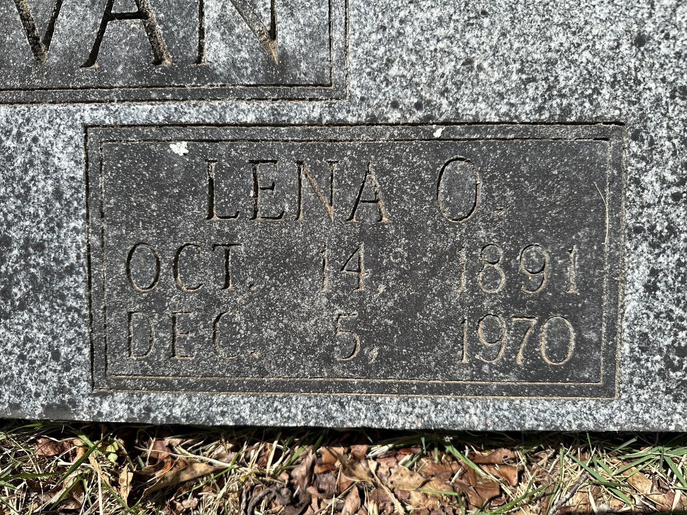
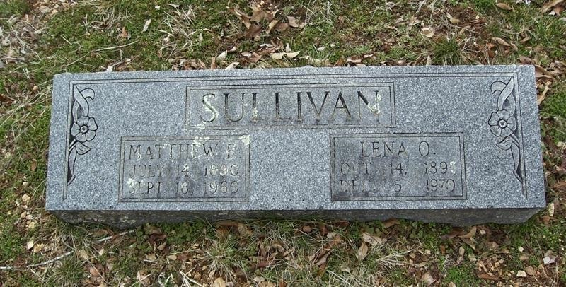

Lena (Spencer) Sullivan
Life dates not fully established

Quick Facts
Immediate Family
Parents
- Unknown
Spouses
Children
- Martha J. (Sullivan) Lewis (identified by her obituary as daughter)
- Mary Jane Schuab
- Dorothy Sullivan
- Matthew Edward Sullivan Jr.
- James S. Sullivan
- Robert J. Sullivan
- Dan J. Sullivan
- Jo Ann Graham
- Elizabeth Wright
- Daniel G. Sullivan, 18, and Joann Sullivan, 16 (1950 census; possible matches for Dan J. and Jo Ann Graham are unresolved)
Siblings
- Unknown
Family Relationship Notes
Martha’s 2014 obituary identifies her mother as Lena, née Spencer, and father as Matthew Sullivan. The original 1950 census records Lena O. Sullivan, age 58, wife of Matthew E., in Lesterville Township; it gives Missouri as birthplace.
Find a Grave identifies Lena O. Sullivan as born 14 October 1891 in Illinois, died 5 December 1970, buried at Lesterville Cemetery, spouse of Matthew Edward Sullivan Jr. Its memorial text names Martha J. among her children. The shared Sullivan marker and household census align with Martha’s obituary, strongly supporting this identity. Keep the tombstone/memorial “O.” distinct from the obituary’s “Spencer” until an original name record bridges them.
Find a Grave’s photo tab contains Lena’s nameplate, the shared couple marker, and an earlier view; the linked Matthew photo tab adds his separate WWI marker and plaque close-up. All are archived and are cemetery images, not portraits or family snapshots.
The census lists Daniel G. and Joann as children in the household. Martha’s obituary names Dan J. Sullivan and Jo Ann Graham as siblings; those may be the same people but remain unmerged. The two source lists of children differ and are retained with provenance.
On Family Tree Sites
No independently verified tree profile is linked.
Life Timeline
By 1928
Mother of Martha J. Sullivan, who was born in St. Louis on 16 July 1928, per Martha’s obituary.
4 Apr 1950
Enumerated as Lena O. Sullivan, wife of Matthew E., with Daniel G. and Joann in Lesterville Township.
Life Story
Lena O. Sullivan was born 14 October 1891 in Illinois and died 5 December 1970, according to the Find a Grave memorial and marker. She is buried at Lesterville Cemetery with husband Matthew Edward Sullivan Jr. Martha’s 2014 obituary identifies her mother as Lena, née Spencer, and the 1950 census shows Lena O. with Matthew E. and children in Lesterville Township. The initial O. and maiden-name form Spencer remain unbridged by an original vital record.
Photo Gallery






Sources and Evidence
- Martha J. Lewis obituary, 2014: gives mother’s name as Lena (Spencer) Sullivan and lists Martha’s siblings.
- 1950 U.S. Census, Reynolds County, Missouri, ED 90-5, sheet 4 (NARA original image), enumerated 4 April 1950; Lena O. Sullivan, wife of Matthew E., with Daniel G. and Joann. Image reviewed directly.
- FamilySearch 1950 census index search for Matthew Sullivan / Lena, listing their household members.
- Find a Grave memorial for Lena O. Sullivan: dates, Lesterville Cemetery; spouse Matthew Edward Sullivan Jr.; Martha J. listed among children.
- Lena memorial photo tab, three images by Cathy Hill and ancestorhunter.
- Find a Grave memorial for spouse Matthew Edward Sullivan Jr., including his military marker and burial details.

Person Archive
Browse the records, source notes, photos, and clippings saved for this person in the American Bloodline archive.
Research Notes and Open Questions
- Find a Grave supplies Lena O. Sullivan’s dates, Illinois birthplace and Lesterville Cemetery burial; a shared marker with Matthew and the linked spouse/child information support the identity match to Martha’s parents. The memorial is derivative.
- Martha’s obituary supplies maiden name Spencer. The marker and memorial use Lena O.; no original marriage, birth or death record has been reviewed to explain the middle initial/name variation.
- Find a Grave’s family text names spouse Matthew and children including Martha J.; its full child list differs from Martha’s obituary sibling list. Preserve both source forms without forcing a reconciliation.
- The 1950 census’s Daniel G. and Joann may correspond to obituary-listed Dan J. and Jo Ann Graham, but remain unresolved.
DNA
No DNA matches linked yet.
Family Notes
No Family Notes link is listed on this profile.
Profile created 24 November 2026 from Martha Lewis’s obituary and an inspected 1950 census image.